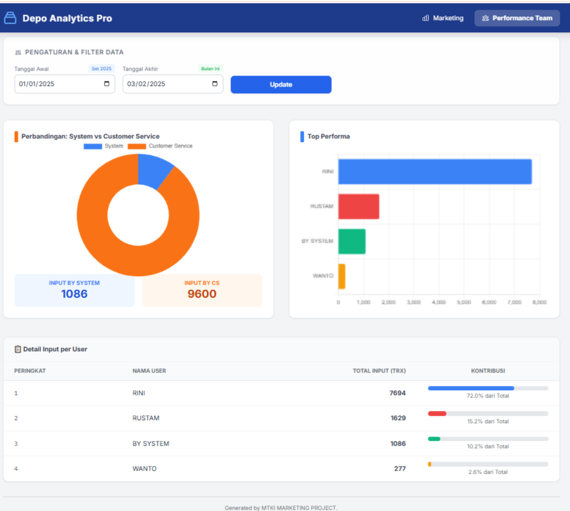
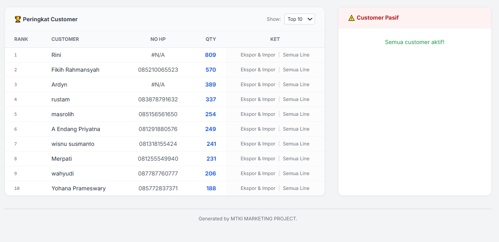

Depo Data Marketing Dashboard



Problem
Pemantauan volume transaksi harian, aktivitas pelanggan, dan performa tim Customer Service (CS) sebelumnya dilakukan secara manual dan tersebar di berbagai berkas. Hal ini menyulitkan tim marketing dalam melacak tren pergerakan volume secara real-time dan mengidentifikasi pelanggan yang mulai pasif.
Objective
Mengembangkan Depo Analytics Pro, sebuah dasbor web interaktif yang mengonsolidasikan data operasional depo. Dasbor ini dirancang untuk memfilter data secara dinamis, memvisualisasikan tren pergerakan kargo, memetakan peringkat pelanggan (Top Customer), serta memonitor kontribusi *data entry* antara sistem otomatis dan manual oleh CS.
Tools Highlight
- Data Visualization Dashboard
- Google Apps Script (Web App)
- Marketing Analytics
- Performance Monitoring
Logic & Metrik Utama
- Trend Line: Volume per Tanggal
- Data Filter: By Date & Shipping Line
- CS Perf: % Input by User
- Cust Status: Aktif / Pasif Logic